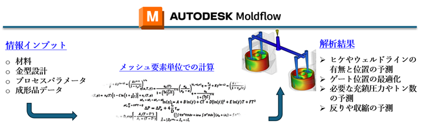
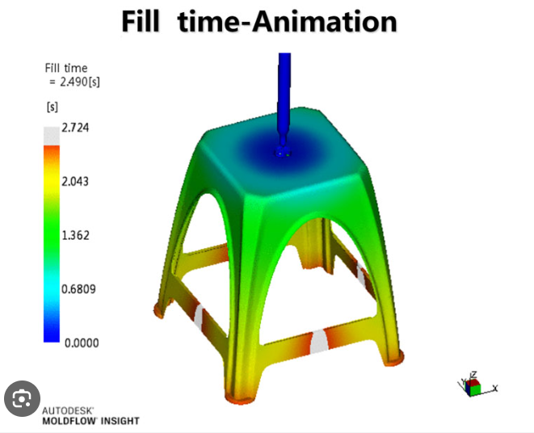

Cost Reduction & Quality Improvement
with Injection Molding Simulation
with Injection Molding Simulation
Solve your worries about “Is it really okay to cut the mold as is?”
Analysis Builds Trust
Move forward with evidence, not just intuition.
Resin flow analysis is a technology that supports optimal mold design and improved product quality.
By incorporating material and process information into Moldflow, we optimize warpage, shrinkage, and gate location.
By incorporating material and process information into Moldflow, we optimize warpage, shrinkage, and gate location.

For Accurate Analysis Results
Experienced Analysts
The accuracy of resin flow analysis greatly depends on correct input and setup.
There are many cases where inexperienced analysts produce inaccurate results.
A single mistake in flow analysis can lead to significant costs. At Kaiseki Giken, Autodesk-certified experts provide precise analysis.
There are many cases where inexperienced analysts produce inaccurate results.
A single mistake in flow analysis can lead to significant costs. At Kaiseki Giken, Autodesk-certified experts provide precise analysis.
Quality of Resin Material Data
The quality of resin material data has a major impact on analysis results.
We use data provided by material manufacturers,
and when necessary, collaborate with them to obtain the latest data.
We also customize material data to accurately reflect resin properties.
We use data provided by material manufacturers,
and when necessary, collaborate with them to obtain the latest data.
We also customize material data to accurately reflect resin properties.

Issues Solved by Flow Analysis
Case 1: Reduce Warpage After Molding
Analyze material data and gate location to minimize shrinkage differences caused by fiber orientation.
Case 2: Mass Production with Low-Tonnage Injection Machines
Calculate required tonnage and propose process parameter adjustments.
Verify manufacturability with logical evidence.
Verify manufacturability with logical evidence.
Kaiseki Giken's Strengths
- Experience with automakers such as Honda and GM
- Autodesk Expert Certified engineers
- Bilingual in Japanese and English
- Practical experience at Tier 1 suppliers in North America